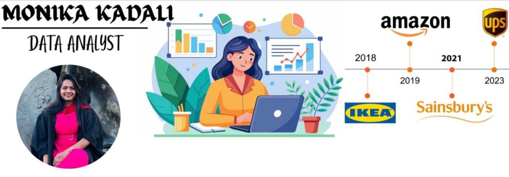
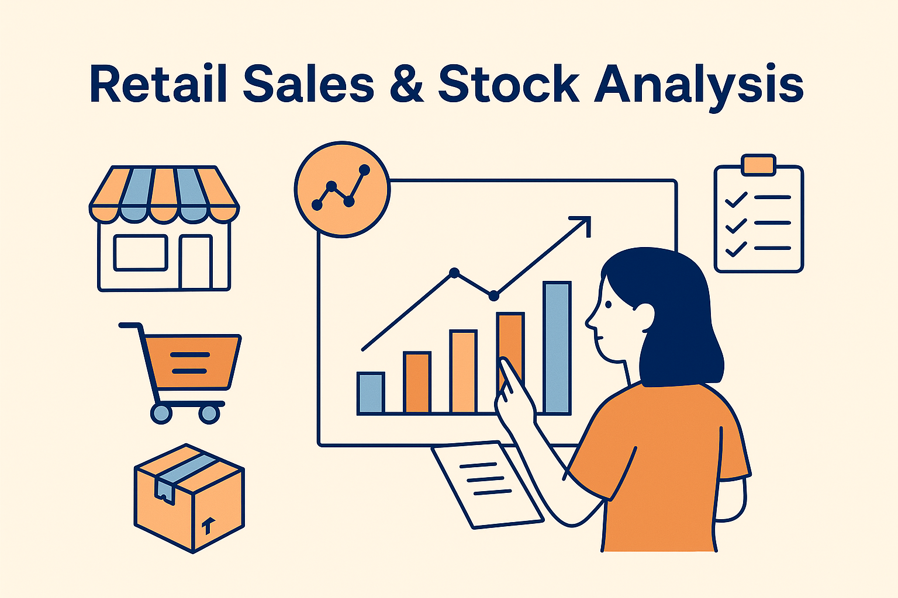
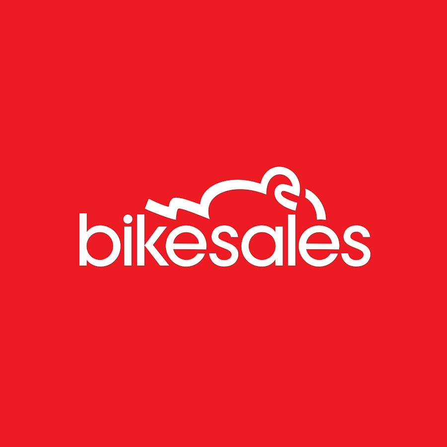

Hi! I’m Monika Kadali, a Data Analyst with a passion for transforming raw numbers into real-world insights. I hold a Master’s in Advanced Computer Science from the University of Leicester, and have industry experience at UPS and Amazon, where I worked with cross-functional teams to streamline processes, analyze complex datasets, and turn performance trends into actionable strategies.


This interactive dashboard provides deep insights into retail product performance, sales trends, and intelligent restocking suggestions. Built with Python, Streamlit, and Plotly, it helps retail analysts track business performance across time and product categories.

An interactive Streamlit dashboard showing: Monthly PCNs issued, Income generated, Visual comparisons using Plotly. Built With - Streamlit, Plotly, Pandas.
A dashboard to analyze Leicester City PCNs and income data This project presents four key visualizations that showcase monthly and year-wise trends in Penalty Charge Notices (PCNs) issued by Leicester City Council. These charts provide insights into enforcement volume and revenue patterns.
This project is a performance analytics dashboard designed to monitor and evaluate the productivity and quality metrics of Offshore Customer Care Associates (CCAs). The dashboard is built in Excel and provides actionable insights for Team Managers, Quality Auditors, and Leadership.
Objective is to visualize key performance indicators (KPIs) such as: Average Handling Time (AHT), Customer Satisfaction Score (CSAT %), Adherence %, Absenteeism %, Quality Score (QA Audit %)
These metrics help in identifying top performers, highlighting improvement areas, and making data-driven operational decisions.

This Excel-based dashboard visualizes and analyzes key customer data related to bike purchases. The goal of this project is to uncover insights about buying behavior and demographics through intuitive charts, slicers, and KPIs.
Excel dashboard showing regional coffee sales performance This dashboard visualizes regional coffee sales performance across product categories and time. Built entirely in Excel using pivot tables, slicers, and charts. There are total 5sheets in this file - orders, customers, products, TotalSales, and Dashboard.